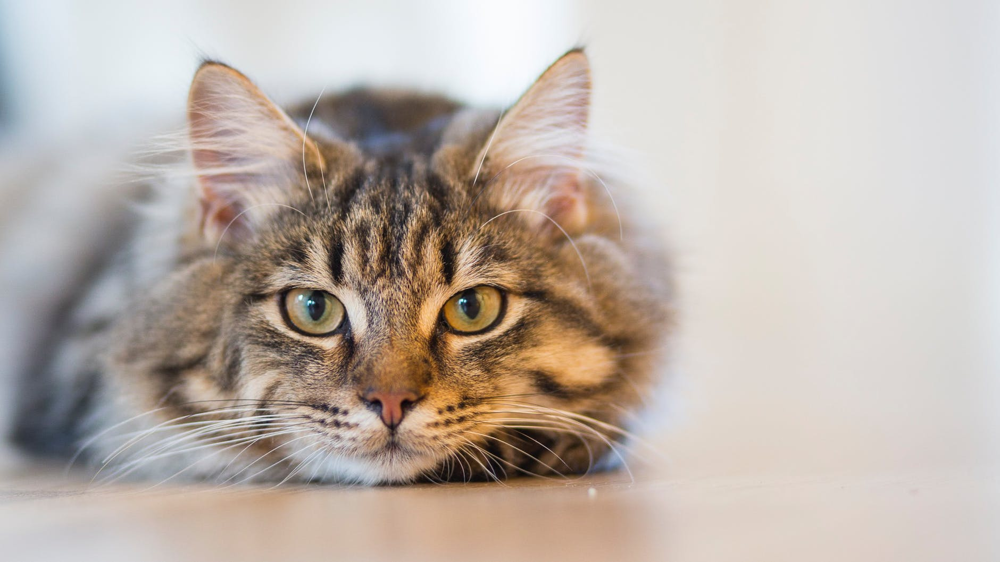
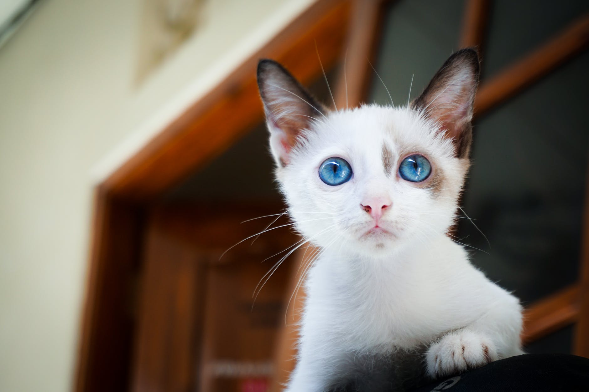

Om katter

Katt er et dyr som tilhører kattefamilien. Det
skilles gjerne mellom villkatter og tamkatter.
Mellom tamkatter skilles det mellom kort- og
langhårede katter. Tamkattene er relativt små dyr
som stort sett ikke blir større enn 10kg.
Villkatter er litt større enn tamkattene.
Bjørn
10/10
Det hevdes at Bjørn til en hver tid bærer med seg
et havlt kilo støv festet til magen. På grunn av
underutviklede bein, er Bjørns hverdag preget av
en konstant nærkontakt med gulvet. Hans fyldige pels
gjør at Bjørn passer særdeles godt sammen med Jifs
moppesystem. En mer praktisk katt skal man lete
lenge etter.
Raptus

5/10
Den svært så blåøyde katten, Raptus, er ordentlig lettskremt.
Selv den minste forstyrrelse kan få Raptus til å stivne
av skrekk. Dette har gjort han til et yndet fotoobjekt
(Bildet over er tatt med lukkertid på 10s). Tendensen
til å stivne av skrekk kan også være en ulempe, som da
han fikk en rett høyre fra nabokatten Pusur.